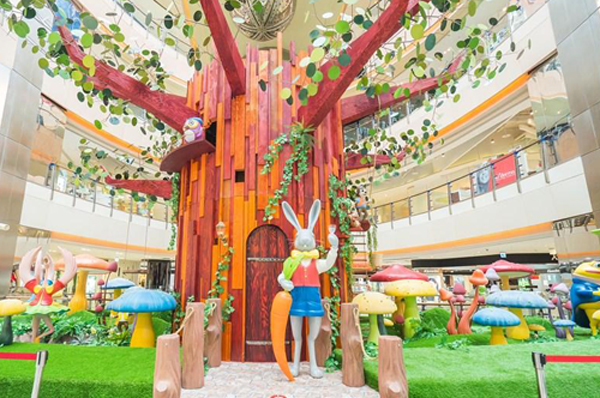

17date
桃園地景藝術節&大江購物中心
江購物中心位桃園縣中壢市，全年免費停車+6000坪美食餐廳。除了有歐洲最棒的SBC星橋國際影城外，更有米其林餐廳進駐!!是目前桃園市最夯的購物中心+餐廳+熱門拍照打卡景點2018桃園地景藝術節結束後就可以到大江購物中心吹冷氣吃美食。其中距離大江購物中心最近的展區是青塘園，開車大約10分鐘左右的距離，青塘園展區的主題<水young青塘園>。

2018桃園地景藝術節總共有3大展區分別在:楊梅/富岡、中壢/老街溪、青塘園地區，設置超過50件藝術裝置。
青塘園位於中壢青埔特區的生態公園，原為農業灌溉用的陂塘，後經重新規劃後成為民眾的親水空間，2018桃園地景藝術節將在青塘園(公12) 及公13美術館預定用地，設置大型戶外及水面裝置藝術，並在假日演出水上環境劇場 «水young桃源 »。從桃源發展脈絡中取材，結合大型水幕多媒體投影、機械動態舞台、造型多樣的水上載具、吸晴的高空特技演出與絢麗的燈光效果，帶領觀眾一同進入流光溢彩星光璀璨的動人水上音樂國度。